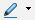

|
Знак плюс (+) в описании клавиш означает одновременное их нажатие.
Знак минус (-) в описании клавиш означает, что необходимо нажимать их по порядку.
ЛКМ и ПКМ - соответственно Левая и Правая Кнопка Мыши
Общее
- DXP\Preference - Общие настройки здесь
- Alt+F5 - Вид на полный экран
- Shift+F - Поиск подобных
- Shift+Ctrl+D - Привязать к сетке
- A - Align меню
- S - Select меню
- T-C - Cross probe. Нажимать на Ctrl+ЛКМ чтобы перейти на плату или схему соответственно
- V-F - Масштаб на всю плату или схему
- V-W - Выбор отображаемых панелей
- Относительные пути в папке проекта например .\Backup\ для автосохранения
настраиваются в DXP\Preferences\Data Menegment\Backup\Path
Схемы
- V-U - переключение единиц измерения мм/дюймы
- X - отображение относительно оси X
- Y - отображение относительно оси Y
- T-A-A - Перемаркировка позиционных обозначений
- T-L - Обновление из библиотеки (Menu\Tools\Update From Libraries)
- P-W - Соединение. Shift+Space - меняет режим угла проводника 90 - 45 - Any
- Подсветка цепей в SCH - нажать на иконку с карандашом  и выбрать цепь
- Символ надчеркивания в цепях - Либо ПОСЛЕ каждой буквы вставить \ ,
либо ПЕРЕД всем текстом и включить DXP/Preferences/Schematic/Grafical Editing/Single `\` Negation
- Настройка примитивов по умолчанию - DXP/Preferences/Schematic/Default Primitives
- Выделение на плате элементов, выделенных на схеме – после выделения элементов на принципиальной схеме,
ПКМ – Part Action – Select PCB Components или выделить - T-S.
Настройка масштаба после переключения на плату DXP/Preferences/System/Navigation ползунок Far-Close
- Чтобы при перемещении УГО за ним тянулись проводники - DXP/Preferences/Schematic - Graphical Editing - Always Drag При установленной галочке за компонентом всегда "тянуться" провода. При зажатом CTRL - компонент перемещается отдельно от проводов.
Платы
- После создания платы создаем слои по образцу (L)
- Слои Mechanical 1 и Mechanical 2 объединить в пару
- Чтобы заменялись специальные строки на PCB (.Designator итп) - L/View Options/Display Options/Convert Special String
- Прилипание к сетке настраивается в Board Options/Snap Options можно нажать - D-O
- Редактирование размера платы - в режиме Board Planing Mode (1) - Menu/Design/Edit Board Shape
или Menu/Design/Modify Board Shape (Можно нажать D-D-Enter или D-D-Down-Enter)
- * или (Ctrl-Shift-колесико) - Переходное отверстие на другой слой
- + - - Переключение между слоями при проведении трассы
- 1, 2, 3 режимы работы редактора PCB (Определение границ платы - Board Planing Mode, 2d, 3d)
- 4 - Смена режима VIA. В режиме User choise выбор Shift-V
- A - меню выравнивания
- G - Выбор сетки из списка. Для редактирования пункта нажать на него с Ctrl
- J - Перемещение по плате и задание любимых зон
- L - Переместить на другую сторону (Удерживать нажатой ЛКМ на объекте)
- N - Меню выбора режима отображения связей
- O - Меню Options
- Q - Переключение единиц измерения мм/дюймы
- F5 - Переключение подкрашивания цепей как на схеме. Настройка DXP/Preferences/PCB Editor/Board Insight Color Overrides
- Пробел - Поворот (Удерживать нажатой ЛКМ на объекте)
- Ctrl+H - Выделение всей цепи
- Ctrl+M - (Можно R-M, R-P, R-S) измерение расстояний, Shift-C чтобы убрать размеры
- Ctrl+ЛКМ - Выделение всей цепи
- Shift+G - Открепляет и прикрепляет окошко Insight
- Shift+H - Отключение-включение Insight окна
- Shift+S - Режим одного слоя
- Shift+W - Меню выбора ширины дорожки (при разводке)
- Shift+ПКМ - Глобус в 3D режиме
- Shift+Пробел - Изменение способа проведения трассы
- D-R - Правила
- M-D - Перемещать компонент вместе с дорожками (Включить DXP/PCB Editor/General/Other/Comp Drag = Connected Tracks)
- O-N - Редактирование/Создание/Удаление цепей (можно D-N-N)
- P-L - Рисовать линию
- P-P - Добавить площадку
- P-T - Добавить дорожку (3 - смена ширины дорожки из правил мин/рек/макс)
- P-V - Добавить переходное отверстие (Via)
- R-M - Измерение расстояния
- R-P - Измерение расстояния между примитивами
- S-S - Выделить всю дорожку на одном слое (также если выделить кусок и нажать TAB)
- T-M - Стереть маркеры ошибок (Menu/Tools/Reset Error Markers)
- V-B - Вид с обратной стороны (зеркально)
- U-U - Меню удаления разводки
- E-O-S - Установка начала координат платы (Menu/Edit/Origin/Set)
- T-Y-Enter - Включить/отключить показ плотности
- V-G-G - Установка специфической сетки
- Перенести на другой слой - Выделить объект затем ПКМ/Properties... там выбрать слой куда перенести и нажать OK
- Задать любимую ширину дорожек (предлагаемую по Shift-W) - Menu/Tools/Preferences.../PCB Editor/Interactive Routing/Favorite Interactive Routing Widths
- Задать предлагаемую ширину дорожки - Menu/Tools/Preferences.../PCB Editor/Interactive Routing/Interactive Routing Width Source/Track Width Mode/Rule Preferred
- Tools/Remove unused pad shapes... - Для удаления неиспользованных пятачков на внутренних слоях
Полигоны
- P-G - Установка параметров заливки. По окончании - заливка
- Перезаливка - выделить полигон, затем ПКМ Poligon Action/Repour Selected
- T-V-G - создаёт полигон из контура, выделить нужный контур и нажать комбинацию клавиш (Menu/Tools/Convert/Create Poligon from Selected Primitives)
- T-G-M - полигон менеджер. Тамже можно создать полигон из контура платы нажав кнопку [Create New Polygon from...]
- T-G-H - спрятать полигоны
- T-G-E - восстановить полигоны
- Ctrl+D (или просто L и выбрать вкладку Show/Hide) - для настройки способа отображения полигонов и прочего
- Ctrl+ЛКМ - На стороне полигона добавит новую вершину
- ЛКМ+Delete - На вершине полигона удалит эту вершину
Библиотеки
- Alt-T-W - добавить часть (part) к компоненту или Menu/Tools/New Part
- Чтобы компонент не включался в BOM установите ему тип (Type) Standart No BOM (Component properties... ПКМ на названии футпринта в библиотеке)
Прочее
- Вспомогательные линии или Work Guides. Как их убрать? Tools/Guide Manager. Снять галку, чтобы скрыть, либо ПКМышки - Delete All
- Зазор меди до края платы настраивается в правилах: Manufacturing/Board Outline Clearance. Нужно добавить правило и настроить зазоры
- Вырез в плате: T-V-B - выделить нужный контур и нажать комбинацию клавиш (Menu/Tools/Convert/Create Board Cutout from Selected Primitives)
Вывод
При печати через Output Job Files в PDF чтобы размер печати совпадал с реальным нужно указать
в свойствах PDF в Output Containers/Advanced/PCB Page Size and Orientation Source: Page Setup Dialog
File — Fabrication Outputs — ODB++ Files. Затем Tables — Layers. Там снимаем галки со всех слоев, кроме Top или Bottom,
в зависимости от нужного слоя — верхний или нижний, Drill и Keepout или Mechanical1, в зависимости где нарисован контур платы, если есть.
Затем меняем цвета — Top или Bottom ставим черный, Drill — белый, Keepout или Mechanical1 — черный.
Затем — File — Print Preview — Print Color = Color, User Scale = 1,0.
Для создания панелей
- Добавьте в проект пустую плату.
- Установите метрические единицы измерения (Q).
- Установите размеры.
- Сохраните с именем например Pаnel_PCB.PcbDoc.
- Далее Place/Embedded Board Array/Panelize выберите в Property/PCB Document существующую плату.
- Настройте количество плат в рядах и колонках, а также зазоры между ними.
- Добавьте в Output Containers - PDF.
- Укажите в свойствах PDF в Output Containers/Advanced/PCB Page Size and Orientation Source: Page Setup Dialog.
- Добавьте в проект Output Job Files.
Печать панелизированной платы
Добавьте в раздел Documentation Outputs плату с панелью, созданную на предыдущем шаге. На ней ПКМышки Configure...
Выберите нужные слои (удалять ПКМышки на слое и Delete), затем там же кнопка Prefereces... настройте необходимые цвета (что чёрным, а что белым).
ПКМышки на файле Page Setup... Scaling/Scaled Print Scale 1.00. Color Set - Mono. Установите размер бумаги и разрешение. Затем кнопка Preview.
Если всё нормально то печатаем.
Altium Designer and pads with drill holes on photomask
Some people use to make PCB at home by method of Laser-Iron-Textolite or the photoresist method.
They route an PCB and then print it on paper in b/w. Then PCB is tinned and drilled.
It is very easy to drill an PCB if copper pads which are to be drilled already have a hall in the middle.
In this way drill is so to say auto-aimed by the borders of solder on copper pad and does not slide out.
But it is not so easy to get photomask with hall in pads by means of AD. But it is possible.
True way: create two gerber files with bottom and top layers, and drill file.
These actions are accessed in PCB mode through File-Fabrication options-[Gerber files, NC Drill Files] .
So, we have 3 files. Then, switch to "top" gerber. Go to File-Import-Quick load.
Then in the dialog select the path "project_name_Files" and there will be one .txt file "project_name.txt", choose it.
Then go to View-Workspace Panels-CamStatic-CamStatic. In CamStatic dialog switch off top layer and drill.
Go to Edit-Composite layers-Build Composite. You must set name of new layer lest AD crashes.
First layer in list will be the top layer, and the second will be the drill.
In Polarity column you select Dark for wire layer and Clear for drill, and go further. That's all.
For LIT you mirror resulting layer if it is top when for photoresist method you mirror the bottom.
Mirroring is accessed via Tools->Film wizard.
PS. If you see the haircrosses on drill holes, go to View and select Cam Editor instead of NC Editor.
Классы
Если для каких-то цепей или компонентов на схеме требуется выполнение особых правил разводки (например, определенная толщина дорожек,
или особый способ подключения выводов компонента к полигонам), передачу информации в ПП можно выполнить с помощью Классов Компонентов (или Классов Цепей).
Впоследствии, при проектировании ПП, для этих классов можно написать правило разводки.
Установка класса компонента (Component Class) выполняется путем добавления пользовательского параметра (User Parameter) с именем «ClassName».
При этом значением этого параметра должно стать имя класса, которое мы хотим сопоставить компоненту.
Например, при разводке платы XX222, для компонентов, которые требовали подключения к полигонам без тепловых барьеров, был прописан класс «Direct_connect»,
для которого впоследствии было создано специальное правило разводки.
Установка класса цепи (NetClass) выполняется путем присоединения к соответствующей цепи на принципиальной схеме директивы «Net Class»: Place – Directives – Net Class.
После выполнения этой команды появляется специальный значок, который необходимо присоединить к искомой цепи.
Потом двойным щелчком вызываем окно свойств этой директивы (это можно сделать еще перед присоединением к цепи, нажав в процессе выполнения команды клавишу TAB).
В окне свойств необходимо заполнить два поля: поле «Name», в котором указывается название директивы так, как оно будет выглядеть на принципиальной схеме;
и поле Value, в котором необходимо указать название класса цепи. Именно это название класса и будет впоследствии передано в печатную плату.
Организовать новый класс или отредактировать существующий можно и на PCB - Menu/Design/Classes.
Room
Альтиум позволяет объединять компоненты в группы, сопоставляя каждой группе свою область размещения – Room. Определить Room можно как из схемы, так и прямо на печатной плате.
Определение из принципиальной схемы.
По умолчанию, Альтиум предлагает с каждого листа принципиальной схемы создавать свою область размещения.
Кроме того, возможно создание областей размещения для компонентов, имеющих одинаковый класс (Component Class). Режимы создания областей размещения определяются положением галочек в Project Options, на закладке Class Generation. Окно «Project Options» можно вызвать из меню «Project» (при работе в схемном редакторе).
Определение в редакторе печатных плат.
Выделяем необходимые компоненты, затем Design/Rooms/Create <несколько вариантов> Room from selected component.
Созданная область размещения передвигается по плате вместе с составляющими ее компонентами. При вынесении какого-нибудь из компонентов за пределы области, и область и компонент
подсвечиваются зеленым цветом, что сигнализирует об ошибке. Это верно для того случая, когда созданная область размещения имеет свойство «Keep component Inside» - держать элементы внутри.
С точностью до наоборот работает свойство «Keep component Outside».
Если комнаты в проекте не нужны, в меню Project->Option на закладке Class Generation надо снять галки в поле [Generate Rooms].
Импорт из PCAD
Горячие клавиши
Видеоподсказки
FAQ
Фишки
Книги
3d модели
|